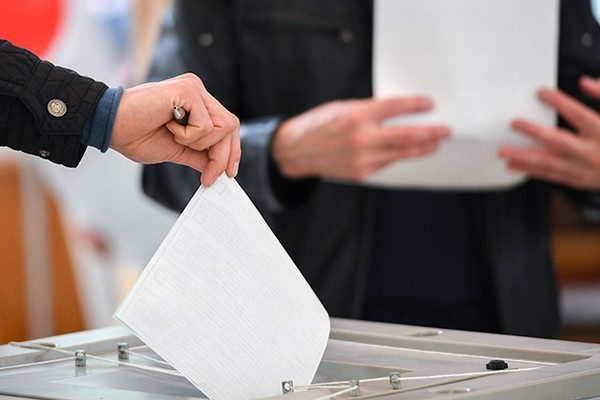
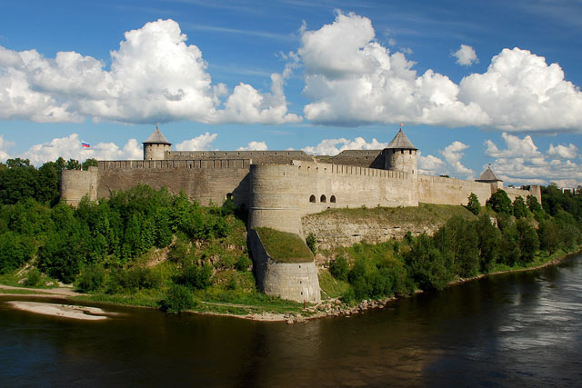
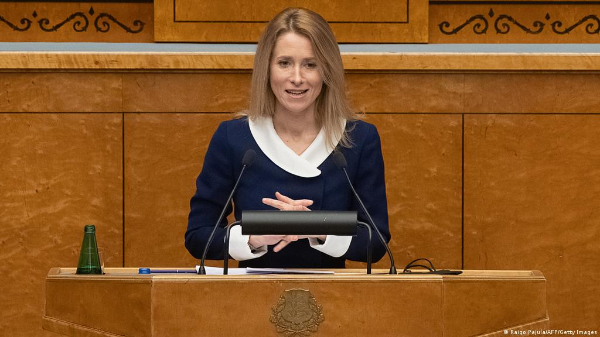

СРОЧНО: Эстонские войска освободили Волмари

В Пихкве проведут референдум о присоединении к Эстонской Республике
В древнем городе заявили, что хотят вернуться в родную гавань, чтобы жить по европейским стандартам в самой развитой и демократичной стране. Жители Пихквы с нетерпением ждут дня голосования, чтобы сделать выбор в пользу своей исторической родины.

Йаанилинн - эстонский город
В министерстве иностранных дел заявили, что Эстония планирует вернуть в свой состав украденный город Йаанилинн. Расположенный через реку от Нарвы, он был украден коммунистическими злодеями, несмотря на подписанный в 1920 году договор.

Кая Каллас ввела бесполётную зону над Латвией
Премьер-министрка Эстонии Кая Каллас ввела бесполётную зону над территорией так называемой "Латвийской Республики". Эта мера стала ответом на недружественные действия латышских фашистов. "Это южное недоразумение понесёт ответственность", - заявила мать эстонского народа.

Тиблы будут задействованы для строительства тоннеля Таллинн-Хельсинки
Арестованных тиблов, отказавшихся от эстификации, выпустят из концентрационного лагеря в Кохтла-Ярве для участия в строительстве тоннеля под Эстонским морем. Новый подводный маршрут соединит столицы братских народов и позволит сократить время в пути.

Екатерина Великая посетит с визитом Тарту
Императрица Всероссийская Екатерина Михайловна Заславская приедет в Тарту для встречи с Каей Каллас. Мать эстонского народа рассказала, что давно восхищается Екатериной и следит за её деятельностью. Две великие женщины обсудят геополитическую ситуацию, возвращение исконно эстонских земель и ликвидацию Латвии.
Кая Каллас рассказала о своих планах на апрель
Мать эстонского народа решила обнародовать свои намерения на грядущий месяц. "Завтракать буду в Таллинне, обедать в Риие, а ужинать - в Петербури. Слава Эстонии!", - заявила Кая Каллас.